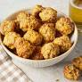

Sausage Balls

A nice cheesey brunch and snake
2 ilbs sausage
16 oz of cheese
tablespoon of itilan seasoning
milk as needed to combine
Steps
Combined dry ingredients in bowl
add sausage and small amounts of milk making sure it does not become to wet
used a tablespoon and scoop bowls onto greased cookie sheet
Cook at 350 for 15 minutes
Home